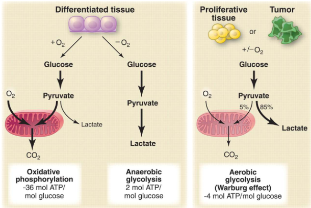
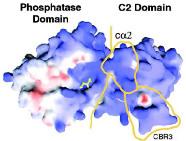

3 Tumor Suppressor Gene Retinoblastoma (Rb)
During this week’s lessons, students will learn about the Rb protein and its roles. They’ll explore how the Rb gene can be turned off through different pathways. An interesting part involves creating an experiment to understand how the Rb protein affects E2F function. Additionally, they’ll dive into the changes in metabolism that happen in cancer cells.
3.1 What is Retinoblastoma?
Retinoblastoma is an unusual type of eye cancer that primarily affects young children, usually between the ages of 1 and 5 years. It forms quickly in the immature cells of the retina, which is the part of the eye responsible for detecting light.
This cancer is quite rare, occurring in about 1 child out of every 20,000 children. It’s the most common malignant eye cancer found in kids. Interestingly, almost half of the children with retinoblastoma have a genetic mutation on chromosome 13 (gene 13q14) that is present from birth.
The above figure outlines two ways that a child can get retinoblastoma:
Hereditary
This means that the gene changes that lead to retinoblastoma are passed down in the family. When someone has hereditary retinoblastoma, they are born with a gene change that makes them more likely to develop this type of eye cancer. This gene change can be found in every cell of their body. Because of this, both eyes are often at risk of getting cancer. People with hereditary retinoblastoma have a higher chance of developing the cancer at a younger age, and they might have other family members who also had this type of cancer.
Non-hereditary
The gene changes that cause the cancer happen by chance and are not passed down from parents. These changes occur in the early stages of a person’s life, often in just one eye.
Unlike hereditary retinoblastoma, only one eye is usually affected. People with non-hereditary retinoblastoma don’t have the same high risk of developing the cancer in both eyes, and they are less likely to have family members with the same type of cancer.
If a cell inactivates a copy of its retinoblastoma genes (i.e., Rb genes), then all’s still good as there’s a backup copy.
3.2 The Rb Gene
The Retinoblastoma (i.e., Rb) gene acts as a vital tumor suppressor, particularly in cases of retinoblastoma, a type of retina cancer. This gene was the first identified phenotypic tumor suppressor.
Its role is crucial in controlling the cell cycle and the advancement of tumors. It holds a significant position in the cell cycle by stopping the transition from G1 to S phase, which in turn hinders cell growth.
It achieves this by binding to a transcription factor called E2F, thus reducing gene transcription. When the Rb function is lost, it can lead to irregularities in the cell cycle, resulting in the development of cancers. The loss of Rb function can be due to chromosomal mutations that deactivate the gene or through the binding of viral onco-proteins that inactivate the Rb protein (pRb).
3.2.1 Rb Gene Inactivation
The Rb protein is like a master organizer inside our cells. It helps put together groups of proteins that control the reading of our genetic instructions.
But sometimes, its groups need to be taken apart, and Rb has ways to do that. There are four known ways that Rb gets turned off, kind of like a switch, which then lets those protein groups disassemble and do their own things.
There are four main mechanisms covered:
Genetic Mutation
Disassembly of the Rb Protein Complex via Genetic Mutations Imagine the Rb gene as a set of instructions that tells cells when to stop growing. Sometimes, mistakes, called mutations, can happen in these instructions. It’s like a typo in a recipe that changes how the dish turns out.
These mutations can turn off the “stop growing” signal of the Rb gene. As a result, cells might not know when to stop growing, and they could start growing too much and form a tumor. So, genetic mutations can mess up the Rb gene’s job and lead to the cells not stopping their growth properly.
Viral Inactivation
Disassembly of the Rb Protein Complex via Viral Inactivation Think of the Rb gene as a traffic controller for cell growth. Now, imagine some tricky viruses coming along and trying to confuse this traffic controller. These viruses have special tricks that make the traffic controller (Rb protein) not work properly. It’s like they put gum on the buttons or messed up the signals. When the traffic controller can’t do its job, cells might start growing too much and create a lump called a tumor. So, just like viruses can make you feel sick, they can also make cells not stop growing when they should, because they mess with the Rb gene’s instructions.
Phosphorylation
Disassembly of the Rb Protein Complex via Phosphorylation Think of the Rb protein as a switch that tells cells when to stop growing. Sometimes, other molecules in the cell can add a small tag called a phosphate to this switch. It’s like putting a lock on the switch so it can’t work properly. When this happens, the switch (Rb protein) can’t do its job of stopping cell growth. The cells might then start growing and dividing more than they should, forming a lump called a tumor. So, when these tags are added to the switch, it’s like the switch gets locked and can’t control cell growth anymore.
Degradation
Disassembly of the Rb Protein Complex via Degradation Imagine the Rb protein as a brake that stops cells from growing too much. But there’s a process where the cell can break down, or degrade, this brake. It’s like if you had a bike with a broken brake, you couldn’t slow down easily. When the Rb brake gets broken down, cells might not know when to stop growing, and they could grow too fast, forming a lump called a tumor. So, just as a broken bike brake can make riding unsafe, when the cell’s brake (Rb protein) gets broken down, it can’t control cell growth properly.
3.2.2 Functions of the Rb Gene
First, it acts as a helper in gene activity and also as a connector between various proteins. It does this through four types of interactions with other proteins. For instance, it can team up with E2F, a gene regulator, to keep it away from its target genes. Additionally, it can join E2F right at the start point of a gene, making E2F less effective and helping to silence the gene. Sometimes, Rb interacts with other transcription factors too. Lastly, Rb can act as a connector for specific processes, like causing the degradation of SKP2 protein. SKP2 is related to cell cycle regulation.
3.2.3 Rb and the Cell Cycle
Rb behaves differently in parts of the cell cycle:
During the G1 Phase
Role of the Rb Protein in the G1 Phase of the Cell Cycle When the Rb protein is active, it attaches to a gene-regulating protein called E2F.
This attachment stops the creation of certain proteins needed for the S stage of the cell cycle. As a result, the cell cycle can’t move forward smoothly. This action of the Rb protein helps in preventing uncontrolled cell growth and acts as a safeguard against the development of tumors.
From the G1 Phase to the S Phase
Moving from the G1 phase to the S phase of the cell cycle involves certain changes. When there’s more activity of proteins called Cyclin D and Cdk4/6, they cause Rb to become hyperphosphorylated.
This process is like a switch that changes the state of Rb. Normally, Rb is like a tumor suppressor, but in this case, it gets turned off. This happens because it separates from E2F, a protein that usually keeps genes from getting too active. When Rb disconnects from E2F, E2F becomes able to activate gene expression, and it’s like releasing the brake on the cell cycle, allowing it to move forward.
3.2.5 Identifying and Characterizing Rb Proteins
The discovery and understanding of Rb in cells involved examining its interactions.
In cells not affected by adenovirus, a protein called E2F doesn’t connect with the E4 protein of the virus, and this keeps E2F linked to the cellular Rb proteins.
However, in cells that are infected with adenovirus, a different protein, E1A, binds strongly to Rb and encourages E2F to connect with E4 from the virus.
This results in E2F separating from Rb. Moreover, E2F and the adenovirus E4 protein are found together in purification processes, forming a complex. This complex created by E2F and E4 connects with the promoter of a specific gene called E2.
3.2.5.1 Inhibiting E2F Activity
The GST-fusion protein technique is used to find out how proteins interact and to pinpoint their important parts.
There’s a piece of the protein that’s made up of 29 building blocks (called amino acids) located at the end of the protein structure. This piece, specifically from position 409 to 437, has the ability to attach to Rb. Within this stretch, the smaller portion from position 409 to 426 is especially important for binding.
This shorter section is known as the Minimal Binding Motif, which means it’s the essential part that makes the connection happen between these proteins.
3.2.6 Removing Rb from E2F
The process of phosphorylation is what causes Rb to detach from E2F. There are various spots on the Rb protein where phosphorylation happens. Many of these phosphorylation sites are found at the ends of Rb, both at the C-terminus and N-terminus. However, there are fewer spots where phosphorylation occurs in the central “Pocket Domain” of Rb.
The pocket regions of Rb are important because they connect with both E2F and an enzyme called Histone deacetylase (i.e., HDAC). HDAC has a role in taking away certain parts (acetyl groups) from histones, which leads to the tightening of the nucleosome core and stops the process of transcription (gene expression).
Additionally, when a particular loop in Rb becomes phosphorylated at positions T821 and T826, it folds back onto a specific part called the B sub-domain. In this position, it forms interactions with a group of amino acids called Lys patch, which contains six lysine residues. This arrangement is significant for how Rb works and interacts with other molecules.
The process of phosphorylation starts a series of step-by-step interactions within the Rb protein. These interactions happen between the part at the end of Rb (C-Terminal region) and the central Pocket Domain. This sequence of interactions gradually weakens the connection between Rb and E2F. This process occurs as cells move through the G1 phase of the cell cycle.
The end part of Rb, called RbC, attaches to E2F only when E2F is joined with DP. When RbC gets phosphorylated, it undergoes a change in shape that prevents it from reaching a spot where E2F would normally bind. This change effectively stops the connection between RbC and E2F, altering how they interact.
When Rb isn’t phosphorylated, it connects to E2F-DP combinations using three distinct interactions. The pocket part of Rb sticks to the E2F transactivation domain (E2F-TD), while the RbCnter and RbCcore parts attach to the E2FCM and DP CM domains, respectively. As the cell progresses through the early/mid G1 phase, a process known as phosphorylation happens, where Cdk4-CyclinD phosphorylates specific sites, such as Ser 788 and Ser 795. This phosphorylation causes the RbCnter to separate, decreasing the overall connection between RbC and E2FCM-DPCM.
Later on, additional phosphorylation, specifically of Thr 821 and Thr 826, prompts an interaction within Rb itself. This interaction between RbC and the Rb pocket prevents RbCcore from binding to E2FCM-DPCM. Furthermore, phosphorylation of other sites within the pocket region is likely to disrupt the binding of the E2F transactivation domain. In essence, these phosphorylation events lead to changes in the way Rb interacts with E2F-DP complexes, affecting their overall affinity and connection.
3.3 Cancer Cell Metabolism
One major sign of cancer cells is that they use energy differently, which we call “altered cell metabolism” or the Warburg Effect. Unlike regular cells, cancer cells have a big change in how they process glucose, which is like their fuel.
Even when there’s oxygen around, cancer cells tend to change glucose into something called lactate instead of using it normally. Also, these cells don’t send much of a molecule called pyruvate to a cycle that helps make energy, called the TCA cycle. This special way cancer cells handle energy sets them apart from healthy cells.
Cancer cells and tiny organisms like microbes act in similar ways when they’re in similar environments. When they don’t have a lot of nutrients, both cancer cells and microbes use oxidative metabolism. But when they’re growing quickly, they switch to a different kind of metabolism called non-oxidative metabolism. This helps them manage their energy needs depending on what’s happening around them.
3.3.1 Why a Less Energy Efficient Metabolism for Cancer Cells?

When cells are growing quickly, they have a lot of ATP and NADH, which are like energy molecules. However, when cells go through apoptosis, which is a normal process of controlled cell death, their ATP levels drop, and they switch to a different type of metabolism to handle this change. An enzyme called adenylate kinase helps convert 2 ADP molecules into ATP and AMP.
When AMP levels become high, a special protein called AMPK becomes active. This process relies on another protein called tumor suppressor protein LKB1. LKB1 helps add a phosphate group to different target proteins, which leads to improvements in how cells manage energy changes. This whole system helps cells adapt to different energy levels and maintain their functions.
3.3.2 Metabolic Needs for Cancerous Cells
When cells are rapidly dividing to create new cells, they have specific energy and building block needs. To make two new cells, the dividing cell has to duplicate everything it has. This means it requires a lot of nucleotides, amino acids, and lipids – these are like the building materials of the cell. Glucose, a type of sugar, is important because it can be used to create energy (ATP) as well as the needed building blocks.
Energy is crucial for the chemical reactions happening inside cells, and ATP is like the energy currency of the cell. However, when cells make new parts of themselves (biomass), they need extra carbon beyond just ATP. For instance, a glucose molecule can give 36 ATPs or provide six carbon atoms that are used to create fatty acids, a type of lipid. So, most of the glucose can’t be fully used for energy.
When cells are actively dividing, they rely heavily on glucose and another molecule called glutamine to make the building blocks they need to create new cells and their components. Glucose provides both energy and the basic materials needed for cell growth. They turn most of the glucose and glutamine into a substance called lactate. This helps make something called NADPH, which is needed for building fatty acids – important components of cells.
Part of the glucose gets used in a process called the TCA cycle, where it changes into citrate. However, because the ratio of ATP to ADP and NADH to NAD is high, the citrate made in the TCA cycle is sent out to the cell’s cytosol, which is like the fluid inside cells. Here, the citrate changes back into acetyl CoA, which is an energy molecule.
Glutamine, on the other hand, directly joins the TCA cycle. It creates citrate in the cycle, which then moves out to the cytosol like before. After that, it changes into acetyl CoA too. Both glucose and glutamine play essential roles in providing the materials and energy needed for cells to grow and multiply quickly.
3.3.2.1 More Requirements
In cancer cells, the way they get their energy and materials is different. When cells are rapidly growing, certain signals from growth factor receptors and enzymes like PI3K become active. This leads to increased glucose uptake – like the cells grabbing more energy from sugar – and the production of more transporters for glucose. There’s an enzyme called pyruvate kinase that usually helps cells break down glucose, but in cancer cells, this process is stopped, allowing pyruvate to be used for building larger parts of the cell.
Another player here is a protein called Myc, which influences the way cancer cells use glutamine. Glutamine helps create a molecule called NADPH that’s necessary for making fatty acids and other important things.
Certain genes, like p53 and LKB1/AMPK, play a role in controlling cell metabolism. They slow down the process of glycolysis, which is how cells break down glucose for energy. This is important because it gives the cell more time to use glucose for other purposes.
Lastly, oncogenes (genes related to cancer) and tumor suppressor genes (genes that usually prevent cancer) also have a say in how cells handle metabolism. They help manage the different pathways cells use to get energy and materials. So, cancer cells have a complex mix of factors that influence their metabolism and energy use.
3.3.3 PI3K / Akt / mTOR Pathway
The PI3K/Akt/mTOR pathway is like a big boss when it comes to controlling a specific type of energy process called aerobic glycolysis. It does this in a few ways: First, it boosts the presence of nutrient transporters on the cell surface, helping cells take in more nutrients. Then, it gets Akt, a type of protein, to increase glycolysis – the process that turns glucose into energy – and make more lactate.
When this pathway is turned on, it’s like giving a green light to the creation of large parts of the cell. This means the cell starts making more of the building blocks it needs to grow and do its functions. So, the PI3K/Akt/mTOR pathway is like the chief manager of how cells produce energy and materials for growth.
3.3.3.1 More About mTOR
There’s a protein called mTOR that comes in two forms, and each form is part of a group of proteins called complexes. One of these complexes, called mTOR complex 1, is responsible for making cells grow and helping them take in nutrients.
When a protein called Akt is active, it adds a phosphate group to another protein called Tsc2, and this makes Tsc2 less active. This less active Tsc2 is then stabilized. Another protein, called Rheb, becomes active when it’s in a certain state. This activated Rheb helps get mTOR complex 1 working. So, there’s a series of interactions and changes that control how mTOR complex 1 functions and influences cell growth and nutrient intake.
3.3.3.2 Molecular Mechanics of PTEN Interactions
PTEN is a special protein that was first found as a possible guardian against tumors. It’s often missing or damaged in various cancers.

One part of PTEN, called the C2 domain, sticks to the cell’s outer layer using positive charges and specific loops. This is how it connects to the cell membrane. But some mutations in this part can weaken PTEN’s ability to prevent tumors.
In cancer cell metabolism, PTEN has important connections and interactions. The phosphatase part of PTEN and the C2 domain work together and attach in a way that tumorous changes can affect. These connections are essential for PTEN to do its job of stopping tumors from growing.